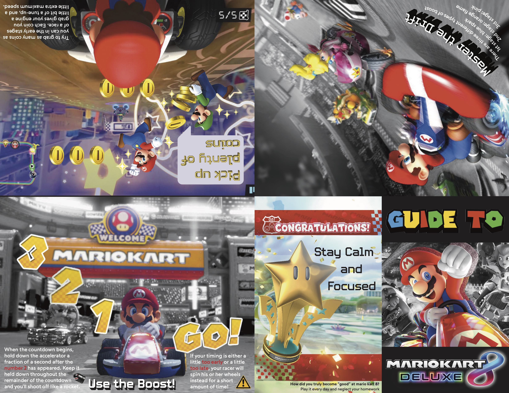
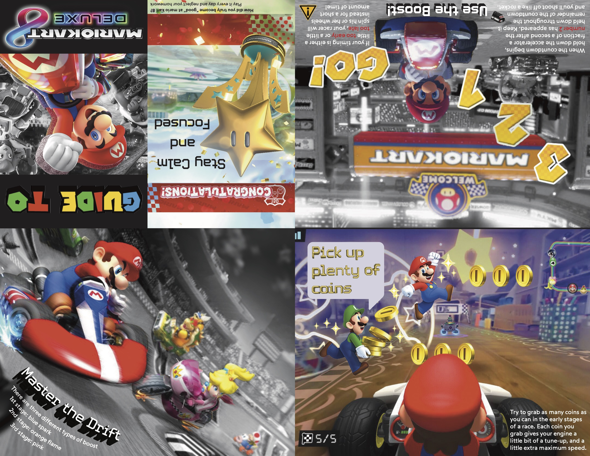
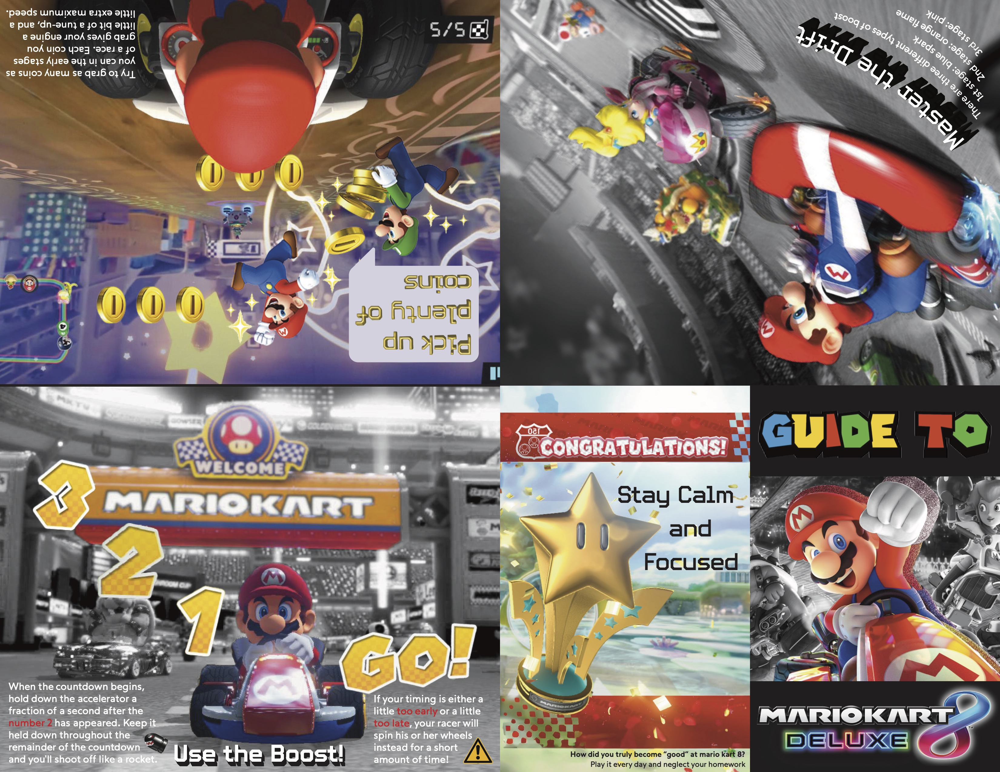
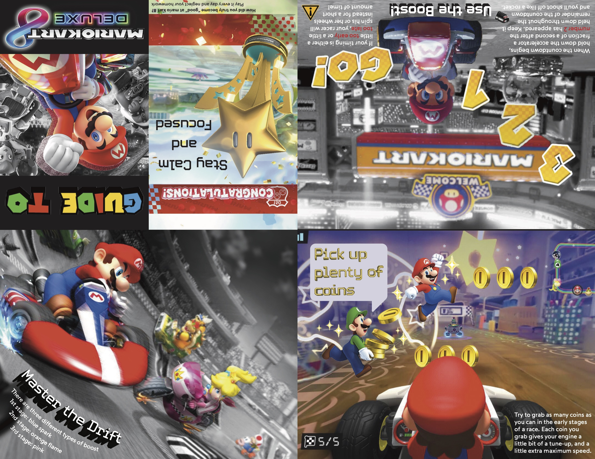

Guide to Mario Kart
Adobe Photoshop, Illustrator, InDesign, 2024
Driven by my love for Mario Kart and the desire to elevate my gameplay from casual racing to strategic mastery, I created this comprehensive guide zine filled with advanced tips and hidden mechanics. The design mirrors the dynamic energy of the game itself, particularly on the drifting page where angled text encourages readers to physically tilt the zine like a joycon controller, transforming static information into an interactive gaming experience.